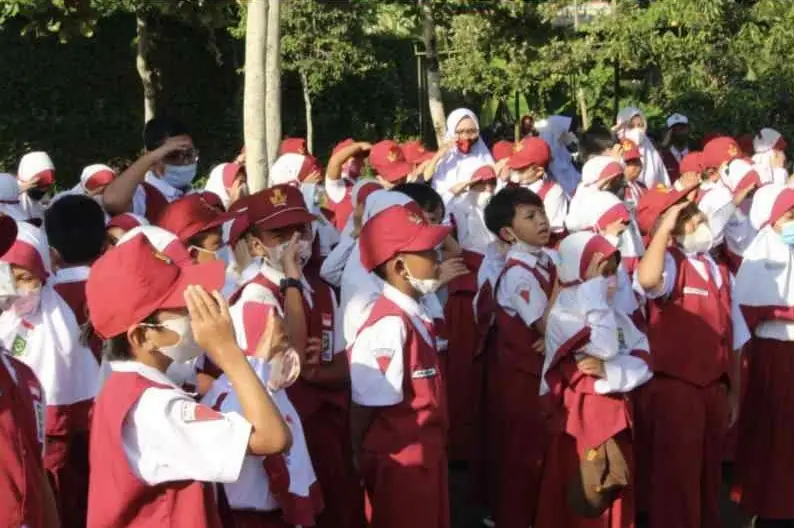
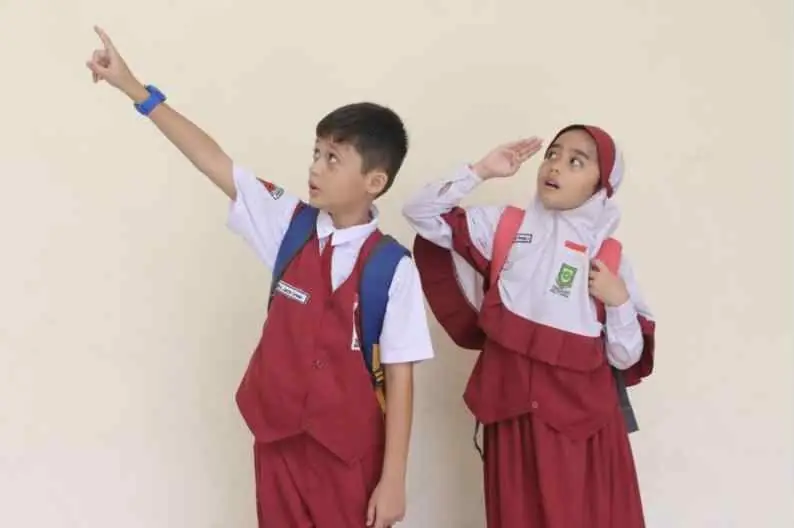

Pendaftaran
Pendaftaran Tahun Pelajaran 2027/2028 dibuka untuk PAUD, SD, dan SMP. Siswa pindahan juga diterima.
Alur pendaftaran
Daftar online
Isi formulir pendaftaran. Bisa juga datang ke sekolah dan tim kami akan membantu mengisinya.
Bayar biaya pendaftaran
Biaya pendaftaran digunakan untuk proses seleksi dan observasi.
Lengkapi data
Unggah data dan dokumen ananda secara online.
Observasi dan wawancara
Dilaksanakan di sekolah: satu hari untuk PAUD dan SD, dua hari untuk SMP. Hasil diumumkan 2–3 hari kemudian.


Syarat masuk
PAUD
Usia 3 tahun untuk KB, 4 tahun untuk TK A, dan 5 tahun untuk TK B pada bulan Juli tahun ajaran berjalan.
SD
Usia 6 tahun pada bulan Juli tahun ajaran berjalan, sehat jasmani dan rohani.
SMP
Lulus SD/MI, memiliki NISN, serta lulus tes akademik dan wawancara.
Dokumen yang disiapkan
- Pas foto 3×4 latar merah, 1 lembar
- Fotokopi akta kelahiran
- Fotokopi kartu keluarga
- Fotokopi KTP orang tua/wali
- Khusus SMP: fotokopi rapor kelas 4–6 yang dilegalisasi dan surat keterangan sehat dari dokter
Pertanyaan yang sering muncul
Berapa biayanya?
Biaya berbeda tiap jenjang dan gelombang, jadi tidak kami cantumkan di sini. Kirim pesan WhatsApp dan tim kami akan mengirim rincian biaya terbaru.
Apakah biaya bisa dicicil?
Bisa. Orang tua menandatangani surat kesanggupan di bagian keuangan.
Apakah menerima siswa pindahan?
Ya, dari sekolah mana pun, selama persyaratan administrasi terpenuhi.
Bagaimana kalau berhalangan hadir saat wawancara?
Pendaftaran dialihkan ke gelombang berikutnya.
Bisakah mendaftar untuk tahun ajaran berikutnya?
Bisa. Daftar lewat formulir, lalu konfirmasi kepada kami melalui WhatsApp.